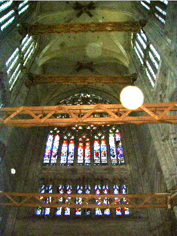
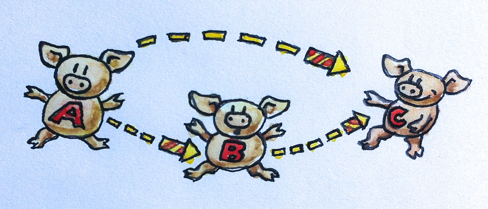

이 문서는 바로 당신을 위해 쓰여졌으며, 당신이 가지고 있을 불만도 당신을 설득하기 위해 사용할 것이다. 당신은 아마 풍부한 여가 시간에 수학의 가장 추상적인 분야 중 하나인 범주론을 배우는 것에 대해 반대할 수도 있다. 그러나 모든 반대 의견은 전혀 근거가 없다는 것을 알게 될 것이다.
내 낙관론은 몇가지 관찰에 근거한다.
첫번째, 범주는 마치 노다지와도 같은 프로그래밍 아이디어이다.
하스켈 프로그래머들은 오랫동안 이 자원들을 활용해 왔고, 그 아이디어가 다른 언어로 천천히 스며들고 있지만 그래도 이 과정은 너무 느리다. 속도를 높여야 한다.
두번째, 범주론은 프로그래머의 머리에 특히 잘맞는 수학이다.
그 이유는 범주론은 세부 사항을 다루기 보다는 합성를 다루기 때문이다. 범주론은 프로그램을 합성 가능하게 만드는 구조를 다룬다.
합성은 범주론의 근간을 이루는 것으로 범주 자체의 정의의 일부이다. 그리고 나는 합성이 프로그래밍의 본질이라고 강력하게 주장할 것이다. 우리는 위대한 엔지니어들이 서브루틴이라는 개념을 생각해 내기 훨씬 전부터 무언가를 합성해 왔다. 얼마 전 구조적 프로그래밍의 원리는 코드 블록을 합성가능하게 만들면서 프로그래밍에 혁명을 일으켰다. 그 후 객체를 구성하는 객체 지향 프로그래밍이 등장했다. 그리고 함수형 프로그래밍은 함수와 ADT를 구성하는 것 뿐만 아니라 다른 프로그래밍 패러다임에서는 사실상 불가능했던 동시성을 구성할 수 있게 해준다.
세번째, 나는 수학을 프로그래머에게 더 맛있게 조리할 것이다
전문 수학자일 때는 모든 가정을 매우 신중하게 설정하고, 모든 명제를 적절하게 한정하며, 모든 증명을 엄격하게 구성해야 한다. 이로 인해 수학 논문과 책들은 외부인이 읽기에 매우 어렵다.
그러나 물리학자로써 말하자면 물리학에서는 비공식적 추론을 사용하여 놀라운 발전을 이루었다. 예로들어 수학자들은 위대한 물리학자 디렉이 몇몇 미분방정식을 풀기 위해 현장에서 만들어낸 디랙 델타 함수를 비웃었다. 그러나 그들이 디렉의 통찰을 공식화한 완전히 새로운 미적분학의 분야인 분포 이론을 발견했을 때, 그들의 웃음은 멈추었다.
물론 이런 논증을 사용할 때는 수학적으로 명백히 잘못된 말을 할 위험이 있기 때문에, 이 책에서 비공식적 논증 뒤에는 견고한 수학 이론이 있도록 하려고 한다. 나는 Saunders Mac Lane의 'Category Theory for the Working Mathematician'의 낡은 복사본을 침대 옆에 두고 있다.
이 문서는 프로그래머를 위한 범주론이기 때문에, 모든 주요 개념을 컴퓨터 코드를 사용하여 설명할 것이다.
아마 독자들은 함수형 언어가 다른 인기 있는 명령형 언어보다 수학에 가깝다는 것을 알고 있을 것이다. 또한 그들은 더 많은 추상화 능력을 제공한다. 그런 면에서 범주론의 혜택을 받기 전에 먼저 Haskell을 배워야 한다는 유혹을 받을때도 있지만, 그런 것은 범주론이 함수형 프로그래밍 외부에는 적용될 수 없다는 것을 의미할 뿐이다. 이는 사실이 아니다.
경험 많은 프로그래머라면 자신에게 물어볼지도 모른다: '나는 범주론이나 함수형 방법에 대해 걱정하지 않고 이렇게 오랫동안 코딩해 왔는데, 무엇이 변한 걸까?'
명령형 언어를 침범하는 새로운 함수형 기능들의 꾸준한 흐름을 분명히 눈치채지 않을 수 없을 것이다. 심지어 객체 지향 프로그래밍의 요새인 자바조차 람다를 허용했다. C++는 최근 몇년마다 새로운 표준으로 빠르게 진화하고 있다. 이 모든 활동은 파괴적인 변화, 또는 우리 물리학자가 부르는 대로, 상전이를 위한 준비이다.
물을 계속 가열하면 끓기 시작한다. 우리는 이제 점점 뜨거워진 물에서 계속 수영해야 할지, 아니면 대안을 찾기 시작해야 할지 결정해야 하는 개구리의 위치에 있다.
이런 변화를 주도하는 요인 중 하나는 멀티코어 혁명이다. 현존하는 프로그래밍 패러다임인 객체 지향 프로그래밍은 동시성과 병렬 처리 분야에서 별다른 이점을 제공하지 않으며, 오히려 위험하고 버그를 유발하는 설계를 유도한다. 객체 지향의 핵심 원칙인 데이터 캡슐화는 공유와 변경이 결합될 때 데이터 레이스를 유발하는 요소가 된다. 또한 데이터를 보호하는 뮤텍스와의 결합은 좋은 아이디어이지만, 불행히도 락은 조합 가능하지 않고, 락 숨김은 데드락 발생 가능성을 높이고 디버깅을 더 어렵게 만든다.
그러나 동시성 없이도, 소프트웨어 시스템의 복잡도 증가는 명령형 패러다임의 확장성 한계를 시험하고 있다. 단순히 말해, 사이드 이펙트가 제어 불가능해지고 있다. 사이드 이펙트를 가진 함수는 종종 편리하고 작성하기 쉽다. 또한 사이드 이펙트는 원칙적으로 함수 이름과 주석에서 명시될 수 있다. SetPassword나 WriteFile 같은 함수는 분명 상태를 변경하고 사이드 이펙트를 생성하는데, 우리는 그것을 다루는 데 익숙하다. 문제는 사이드 이펙트를 가진 함수들을 다른 사이드 이펙트를 가진 함수들과 조합하기 시작할 때, 그리고 그 과정이 계속될 때 복잡해진다는 것이다. 사이드 이펙트가 본질적으로 나쁜 것은 아니지만, 그것들이 숨겨져 있다는 사실이 더 큰 규모에서 관리할 수 없게 만든다. 사이드 이펙트는 조절되지 않고, 명령형 프로그래밍은 모두 사이드 이펙트에 관한 것이다.

하드웨어 변화와 소프트웨어의 복잡도 증가는 우리로 하여금 프로그래밍의 기초를 재고하게 만든다. 유럽의 위대한 고딕 대성당 건축가들처럼, 우리는 재료와 구조의 한계까지 우리의 스킬을 연마해왔다. 프랑스 보베의 미완성 고딕 대성당은 이런 인간의 한계와의 싸움을 증언한다. 그것은 모든 이전 기록을 뛰어넘는 높이와 경량성을 목표로 했으나, 여러 차례의 붕괴를 겪었다. 철 강철과 목재 서포트와 같은 임시 조치는 그것이 붕괴되지 않도록 유지하지만, 분명 많은 것이 잘못되었다. 현대적 관점에서 보면, 현대 재료 과학, 컴퓨터 모델링, 유한 요소 분석, 일반 수학 및 물리학의 도움 없이 많은 고딕 구조물이 성공적으로 완성되었다는 것은 기적과도 같다.
복잡한 운영 체제, 웹 서버, 인터넷 인프라를 구축하면서 우리가 보여준 프로그래밍 기술을 미래 세대들도 높이 평가하기를 바란다. 그리고 솔직히 말해서, 그들이 그렇게 해야 한다. 왜냐하면 우리는 매우 약한 이론적 기반 위에 이 모든 것을 해냈기 때문이다. 앞으로 나아가고 싶다면, 그 기반을 고쳐야 한다.
범주는 대상(object)과 그 대상들 사이를 연결하는 화살표로 구성되는, 매우 간단한 개념이다. 이것이 범주를 그림으로 표현하기 쉬운 이유이다. 대상은 원이나 점으로 그릴 수 있고, 화살표는… 화살표이다. (다양성을 위해, 가끔 대상를 돼지로 그리고 화살표를 불꽃놀이로 그릴 것이다.) 하지만 범주의 본질은 합성이다. 혹은, 합성의 본질은 범주이다. 화살표는 합성될 수 있으므로, 대상 A에서 대상 B로 가는 화살표가 있고, 대상 B에서 대상 C로 가는 또 다른 화살표가 있다면, A에서 C로 가는 화살표(그들의 합성)가 반드시 존재해야 한다.
함수로써의 화살표
이 설명이 너무 추상적인가? 낙심하지 마라. 구체적인 것에 대해 이야기해 보자.
화살표들을 함수로 생각해보자. 이것들은 사상(morphism)이라고도 부른다.
 A 타입의 인자를 받아 B를 반환하는 함수 f가 있다. B를 받아 C를 반환하는 또 다른 함수 g가 있다. f의 결과를 g에 전달함으로써 그들을 합성할 수 있다. 그럼으로써 당신은 방금 A를 받아 C를 반환하는 새로운 함수를 정의했다.
수학에서, 이러한 합성은 함수 사이에 작은 원으로 표시된다: \( g \circ f \)
합성의 순서가 오른쪽에서 왼쪽임에 주목하라. 이것은 어떤 사람들에게는 혼란스러울 수 있다.
Unix의 파이프 표기법에 익숙하다면,
lsof | grep Chrome
이 경우 왼쪽에서 오른쪽으로 진행된다. 하지만 수학과 Haskell에서는 함수들이 오른쪽에서 왼쪽으로 합성된다. g◦f를 "g 이후 f"로 읽는다면 도움이 된다.
Rust에서의 합성
명확히 하기 위해 실제 코드에서의 예를 들어보자.
A 타입의 인수를 받고 B 타입의 값을 반환하는 함수 f
#![allow(unused)] fn main() { fn f(a: A) -> B { /*...*/ } }
B 타입의 인수를 받고 C 타입의 값을 반환하는 함수 g
#![allow(unused)] fn main() { fn g(a: B) -> C { /*...*/ } }
두 함수의 합성은 다음과 같다.
#![allow(unused)] fn main() { fn g_after_f(a: A) -> C { f(g(a)) } }
클로저를 사용해서 표현할 수도 있다.
#![allow(unused)] fn main() { let f = |a: A| -> B { /*...*/ }; let g = |b: B| -> C { /*...*/ }; let g_after_x = |a: A| -> C { f(g(x)) }; }
안타깝게도, 러스트에 두 함수를 받아 그들의 합성을 반환하는 연산자나 키워드는 없다.
Haskell에서의 합성
하스켈에서 A에서 B로의 함수는 다음과 같이 선언한다.
f :: A -> B
g도 마찬가지
g :: B -> C
그들의 합성은 다음과 같다.
g . f
매우 간단하다. 심지어 하스켈은 유니코드 문자도 지원하기 때문에 다음과 같이 쓸 수도 있다.
g ◦ f
또한 함수도 유니코드 이중 쌍점과 화살표르 이용해 선언할 수 있다.
f ∷ A → B
하스켈에서 이중 쌍점은 "이런 타입을 가진다"라는 뜻이다.
함수 타입은 두 타입 사이에 화살표를 넣어 만들어진다.
또한 두 함수의 합성은 사이에 점이나 유니코드 원을 끼워넣으면 된다.
합성의 속성
모든 범주에서의 합성은 반드시 만족해야 하는 두가지 매우 중요한 속성이 있다.
결합 법칙
세 개의 사상 f, g, h가 있고(그들의 객체가 끝에서 끝으로 일치하여) 합성될 수 있다면, 그들을 합성하기 위해 괄호가 필요하지 않다.
수학 표기법으로는
\( h \circ (g \circ f) = (h \circ g) \circ f = h \circ g \circ f
\)
이 식에서 \( \circ \) 기호는 사상의 합성을 나타낸다. 이는 프로그래밍의 함수 합성에도 직접적으로 적용된다.
(유사)하스켈에서는
f :: A -> B
g :: B -> C
h :: C -> D
h . (g . f) == (h . g) . f == h . g . f
함수에 대한 동등성이 실제론 정의되지 않았기 때문에 유사라고 했다.
항등 법칙
모든 대상 A에 대해 합성의 단위가 되는 화살표가 있다. 이 화살표는 대상에서 자신에게로 돌아오는 루프를 형성한다. 합성의 단위가 되는 것은, A에서 시작하거나 A에서 끝나는 어떤 화살표와 합성될 때, 각각 동일한 화살표를 돌려주는 것을 의미한다. 대상 A에 대한 단위 화살표는 idA(대상 A에 대한 항등)라고 불린다.
수학 표기법에서, 만약 f가 A에서 B로 간다면
\( f \circ id_A = f \)
그리고 반대 방향에 대해서는
\( id_B \circ f = f \)
함수를 다룰때는, 항등 화살표는 그저 인자를 그대로 돌려주는 함수로 구현된다. 이 구현은 모든 타입에 대해 동일하며, 이는 이 함수가 보편적으로 다형성을 가진다는 것을 의미한다.
Rust에서는 제네릭으로 정의할 수 있다.
#![allow(unused)] fn main() { fn id<T>(x: T) -> T { x } }
실제로 사용할때는 소유권 규칙을 조심해야 한다. 값을 함수 인자로 넘겨주면 소유권이 넘어가고 그 값을 소유했던 변수는 미할당 상태가 된다는 것을 유의하라
하스켈에서는 항등 함수가 표준 라이브러리의 일부이다. 여기 그 선언과 정의가 있다.
id :: a -> a
id x = x
보다시피 하스켈에서의 다형성 함수는 아주 간단하다. 선언에서 단지 타입을 타입 변수로 바꾸면 된다. 여기에 요령이 있다; 구체적인 타입의 이름은 항상 대문자로 시작하고, 타입 변수의 이름은 소문자로 시작한다. 그래서 여기에서 a는 모든 타입을 대표한다.
Haskell 함수 정의는 함수 이름 뒤에 형식 매개변수가 오며, 여기서는 하나인 x만 있으며, 함수의 본문은 등호 다음에 온다. 이러한 간결함은 새로운 사용자들에게 종종 충격을 주지만, 이것이 완벽한 의미를 가진다는 것을 곧 알게 될 것이다. 함수 정의와 함수 호출은 함수형 프로그래밍의 기본이므로, 그 문법은 최소한으로 줄어든다.
나중에 여러 매개변수를 가진 함수를 정의할때는, 매개변수 리스트 주변에 괄호가 없을 뿐만 아니라, 매개변수 사이에 쉼표도 없다는 것도 보여줄것이다.
또한 함수의 본문은 항상 표현식이다 — 함수 안에는 문장이 없다. 함수의 결과는 이 표현식이다 — 여기서는 단지 x이다.
항등 조건은 (다시, 유사-Haskell로) 다음과 같이 쓸 수 있다.
f . id == f
id . f == f
당신은 스스로에게 물어볼 수 있다: 왜 누군가는 아무것도 하지 않는 항등 함수에 신경을 쓰는가? 다시 말해, 우리는 왜 숫자 0에 신경을 쓰는가? 0은 아무것도 없음을 상징하는 기호이다. 고대 로마인들은 0이 없는 숫자 체계를 가지고 있었고, 그들은 오늘날까지도 살아남은 훌륭한 도로와 수도교를 건설할 수 있다.
0이나 id와 같은 중립 값들은 기호 변수들을 다룰 때 매우 유용하다. 그래서 로마인들은 대수학에서 그다지 뛰어나지 않았지만, 0이라는 개념을 잘 알고 있던 아랍인들과 페르시아인들은 그렇지 않았다. 따라서 항등 함수는 고차 함수의 인자로, 혹은 고차 함수로부터의 반환값으로 매우 유용하게 사용된다. 고차 함수는 함수의 기호적 조작을 가능하게 하는 것이다. 그것들은 함수의 대수이다.
요약: 범주는 대상들과 화살표들(사상들)로 구성되어 있다. 화살표들은 합성될 수 있으며, 그 합성은 결합 법칙을 만족한다. 모든 대상은 합성 속에서 단위 역할을 하는 항등 화살표를 가지고 있다.
합성은 프로그래밍의 본질
함수형 프로그래머들은 문제를 접근하는 데 있어 독특한 방식을 가지고 있다. 그들은 매우 올바른 질문을 던지기 시작한다. 예를 들어, 상호작용적인 프로그램을 설계할 때, 그들은 "상호작용이란 무엇인가?"라고 묻는다. 콘웨이의 'Game of Life'을 구현할 때, 그들은 아마도 생명의 의미에 대해 깊이 고민할 것이다. 이 정신으로, 나는 "프로그래밍이란 무엇인가?"라고 묻고자 한다. 가장 기본적인 수준에서, 프로그래밍은 컴퓨터에게 무엇을 하라고 지시하는 것에 대한 행위이다. "메모리 주소 x의 내용을 EAX 레지스터의 내용에 더하라."
하지만 우리가 어셈블리로 프로그래밍을 할 때조차, 우리가 컴퓨터에게 주는 지시들은 더 의미 있는 것의 표현이다. 우리는 중요한 문제를 해결하고 있다(문제가 사소하다면, 우리는 컴퓨터의 도움이 필요 없을 것이다). 그리고 우리는 문제를 어떻게 해결하는가? 우리는 더 큰 문제들을 더 작은 문제들로 분해한다. 만약 더 작은 문제들이 여전히 너무 크다면, 우리는 그것들을 더 분해하고, 그렇게 계속한다. 마침내, 우리는 모든 작은 문제들을 해결하는 코드를 작성한다. 그리고 나서 프로그래밍의 본질이 온다: 우리는 그 코드 조각들을 합쳐서 더 큰 문제들의 해결책을 만든다. 분해는 우리가 조각들을 다시 함께 놓을 수 없다면 의미가 없을 것이다.
이러한 계층적 분해와 재구성의 과정은 컴퓨터에 의해 우리에게 강요된 것이 아니다. 그것은 인간 마음의 한계를 반영한다. 우리의 두뇌는 한 번에 소수의 개념만을 다룰 수 있다. 심리학에서 가장 많이 인용된 논문 중 하나인 "마법의 숫자 7, 플러스 마이너스 2"는 우리가 마음속에 7 ± 2개의 "덩어리" 정보만을 유지할 수 있다고 주장한다. 우리가 인간 단기 기억에 대해 이해하는 세부 사항은 변하고 있을 수 있지만, 그것이 한정되어 있다는 것은 확실하다. 궁극적으로 우리는 객체의 스프나 스파게티 코드를 다룰 수 없다. 구조가 필요한 이유는 잘 구조화된 프로그램이 보기에 즐거워서가 아니라, 그렇지 않으면 우리의 두뇌가 그것들을 효율적으로 처리할 수 없기 때문이다. 우리는 종종 어떤 코드 조각을 우아하거나 아름답다고 설명하지만, 우리가 정말 의미하는 것은 그것이 우리의 한정된 인간 마음에 의해 처리하기 쉽다는 것이다.
프로그램 구성을 위한 올바른 '덩어리'란 무엇인가? 그들의 표면적은 그들의 부피보다 느리게 증가해야 한다. (이 비유를 좋아하는 이유는 기하학적 객체의 표면적이 그 크기의 제곱으로 증가한다는 직관 때문이다 — 부피가 그 크기의 세제곱으로 증가하는 것보다 느리다.) 표면적은 덩어리들을 구성하기 위해 필요한 정보다. 부피는 그들을 구현하기 위해 필요한 정보다. 아이디어는 한 덩어리가 구현되면, 그 구현의 세부 사항을 잊고 다른 덩어리들과 어떻게 상호 작용하는지에 집중할 수 있다는 것이다. 객체 지향 프로그래밍에서 표면은 객체의 클래스 선언이나 그것의 추상 인터페이스다. 함수형 프로그래밍에서는 함수의 선언이다. (조금 단순화시켜 설명했지만, 그것이 요점이다.)
범주론은 객체 내부를 들여다보는 것을 적극적으로 억제함으로써 극단적인 면을 가지고 있다. 범주론에서의 대상은 추상적이고 모호한 실체다. 당신이 그것에 대해 알 수 있는 전부는 다른 대상과 어떻게 관련되는지, 화살표를 사용하여 그들과 어떻게 연결되는지이다. 이것은 인터넷 검색 엔진이 들어오고 나가는 링크를 분석하여 웹사이트를 순위매기는 방식과 유사하다 (그들이 속임수를 쓰지 않는 한). 객체 지향 프로그래밍에서 이상화된 객체는 그것의 추상 인터페이스(순수한 표면, 부피 없음)를 통해서만 볼 수 있으며, 메소드는 화살표의 역할을 한다. 객체의 구현을 파고들어 다른 객체들과 어떻게 조합해야 하는지를 이해해야 하는 순간, 당신은 프로그래밍 패러다임의 장점을 잃어버린 것이다.
타입과 함수의 범주는 프로그래밍에서 매우 중요한 역할을 맡는다. 따라서 이 목차에서는 타입이 무엇이고 왜 필요한지를 다룰 것이다.
타입을 누가 필요로 하는가?
정적 대 동적 타이핑, 강 타입 대 약 타입에 대한 논쟁은 일부 논란의 여지가 있다. 이 선택들을 사고 실험으로 설명해보겠다.
컴퓨터 키보드에서 무작위로 키를 누르며 행복하게 프로그램을 생성, 컴파일, 실행하는 수백만 마리의 원숭이를 상상해 보자. 기계어로는 원숭이가 생성한 어떤 바이트 조합이든 모두 받아들여져 실행된다. 하지만 고급 언어에서는 컴파일러가 어휘적이고 문법적인 오류를 방지하며, 우리는 이를 높이 평가한다. 그럼으로 인해서 많은 원숭이들이 바나나를 받지 못할 것이지만, 남은 프로그램들은 유용할 가능성이 더 높아진다.
타입 검사는 무의미한 프로그램에 대한 또 다른 장벽을 제공한다. 또한, 동적 타입 언어에서는 타입 불일치가 런타임에 발견되는 반면, 강타입 정적 검사 언어에서는 타입 불일치가 컴파일 시간에 발견되어 실행될 기회가 있기 전에 많은 잘못된 프로그램을 제거한다.
그렇다면 우리의 목표는 원숭이를 행복하게 하는 것인가, 아니면 올바른 프로그램을 생산하는 것인가?
실제로 프로그래밍을 할때 바나나 받기와 같은 간단한 프로그램을 만드는 경우는 잘 없다. 셰익스피어의 전체 작품을 목표로 한다고 생각해보자. 이런 경우 맞춤법 검사기와 문법 검사기를 루프에 포함시키면 목표를 얻을 확률이 크게 증가할 것이다. 타입 검사기는 로미오가 한 번 인간으로 선언되다면, 그가 잎을 틔우거나 강력한 중력장에서 광자를 가두는 일이 없도록 할 것이다.
타입은 합성 가능성에 관한 것
범주론은 화살표들을 합성하는 것에 관한 이론이다. 하지만 아무 두 화살표나 합성될 수 있는 것은 아니다. 한 화살표의 목표 대상은 다음 화살표의 출발 대상과 같아야 한다. 프로그래밍에서는 한 함수의 결과를 다른 함수로 전달한다. 소스 함수가 생성한 데이터를 대상 함수가 올바르게 해석할 수 없다면 프로그램은 작동하지 않는다. 두 끝이 맞아떨어져야 구성이 합성한다. 언어의 타입 시스템이 강할수록 이러한 일치를 더 잘 설명하고 기계적으로 검증할 수 있다.
강력한 정적 타입 검사에 대해 제기되는 반론은 그것이 의미상 올바른 프로그램더라도 컴파일에서 제외시킬 수 있다는 주장이다. 실제로, 이러한 경우는 극히 드물게 발생하며, 모든 언어는 정말 필요할 때는 타입 시스템을 우회할 수 있는 백도어를 제공한다. 러스트에서는 unsafe블록, 트레이트 객체, Any 트레이트 등이 있다. 심지어 Haskell에도 unsafeCoerce가 있다. 하지만 이러한 장치는 신중하게 사용되어야 한다. 프란츠 카프카의 등장인물, 그레고르 잠자가 거대한 벌레로 변신할 때 타입 시스템을 깨뜨렸고, 우리 모두 그 결말을 알고 있다.
또 다른 반론은 타입을 다루는 것이 프로그래머에게 너무 많은 부담을 준다는 것이다. C++에서 몇 가지 이터레이터 선언을 직접 작성해야 했던 경험 후, 이 감정에 동감할 수 있었다. 하지만, 타입 추론이라는 기술을 통해서 컴파일러를 통해 대부분의 타입이 추론될 수 있다. C++에서는 이제 변수를 auto로 선언하고 컴파일러가 그 타입을 파악하게 할 수 있다. 러스트에서는 타입 명시가 기본적으로 선택이다. 변수를 정의할때나 반환 타입, 클로저 등에서까지 타입 추론을 적용해 코드의 간결성을 높이면서도 타입 안전성을 유지할 수 있다.
Haskell에서는 몇몇 경우를 제외하고, 러스트와 마찬가지로 타입 어노테이션은 전적으로 선택적이다. 그럼에도 불구하고 프로그래머들은 타입을 명시하는 경향이 있는데, 이는 코드의 의미론에 대해 많은 것을 알려주고, 컴파일 오류를 이해하기 쉽게 만들기 때문이다. Haskell에서는 프로젝트를 시작할 때 타입을 명시하는 것이 일반적인 관행이다. 이는 나중에 구현을 이끌고 컴파일러가 강제하는 주석이 된다.
강력한 정적 타이핑은 종종 코드를 테스트하지 않는 핑계로 사용된다. 때때로 Haskell 프로그래머들이 "컴파일되면, 그것은 정확해야 한다."라고 말하는 것을 들을 수 있다. 물론, 타입이 정확한 프로그램이 올바른 출력을 생성한다는 보장은 없다. 이런 태도의 결과로, 여러 연구에서 Haskell은 예상만큼 코드 품질에서 앞서 나가지 못했다. 상업적 환경에서는 소프트웨어 개발의 경제성과 최종 사용자의 관용도와 모든 것이 관련되어 있어, 버그 수정의 압박이 특정 품질 수준까지만 적용된다는 것이 밝혀졌다. 이는 프로그래밍 언어나 방법론과는 거의 상관이 없다. 프로젝트가 일정에 뒤처지거나 기능성이 크게 떨어드는 경우의 수를 측정하는 것이 평가에 더 좋다.
단위 테스트가 강타입 시스템을 대체할 수 있다는 주장에 대하여, 강타입 언어에서 자주 사용되는 리팩토링 방법, 즉 특정 함수의 인자 타입을 변경하는 경우를 생각해 보자. 강타입 언어에서는 해당 함수의 선언부를 수정하고 발생하는 모든 컴파일 오류를 해결하기만 하면 된다. 반면, 약타입 언어에서는 함수가 이제 다른 종류의 데이터를 요구한다는 정보가 자동으로 호출 부분까지 전달되지 않는다. 단위 테스트가 일부 불일치를 발견할 수는 있지만, 테스트는 대부분의 경우 확실성보다는 확률에 기반을 둔 과정이다. 따라서, 테스팅은 증명의 대안으로는 믿음직하지 않다. 테스팅은 증명의 빈약한 대체물일 뿐이다.
타입이 무엇인가?
타입을 이해하는 가장 단순한 방법은 그것들이 값의 집합이라고 보는 것이다.
Haskell에서 Bool 타입(구체적인 타입은 대문자로 시작한다는 점을 기억하라)은 True와 False, 두 원소로 구성된 집합이다. Char 타입은 a나 ą 같은 모든 유니코드 문자를 포함하는 집합이다.
집합은 유한할 수도 있고 무한할 수도 있다. Char의 리스트인 String 타입은 무한 집합의 예시이다.
x를 Integer로 선언할 때,
x :: Integer
이것은 x가 정수 집합의 한 원소라고 말하는 것이다. Haskell에서 Integer는 무한 집합이며, 임의 정밀도 산수에 사용된다. C++의 int와 같은 기계 타입에 해당하는 유한 집합인 Int도 존재한다.
사실 타입과 집합을 동일시하기에는 몇 가지 미묘한 점이 있다. 순환 정의를 포함하는 다형성 함수 문제와 모든 집합의 집합을 가질 수 없다는 문제가 있지만, 약속대로 나는 수학적 엄밀함에 집착하지 않을 것이다.
중요한 것은 Set이라고 불리는 집합의 범주가 있다는 것이며, 우리는 그것을 사용할 것이다.
Set에서 대상은 집합이며, 사상(화살표)은 함수이다.
Set은 우리가 실제로 그 대상 내부를 들여다볼 수 있어 많은 직관을 얻을 수 있는 매우 특별한 범주이다. 예를 들어, 우리는 빈 집합에 원소가 없다는 것, 특별한 한 원소 집합이 존재한다는 것, 함수가 한 집합의 원소를 다른 집합의 원소로 매핑한다는 것을 알고 있다. 함수는 두 원소를 하나로 매핑할 수는 있지만 한 원소를 두 개로 매핑할 수는 없다. 항등 함수는 집합의 각 원소를 그 자체로 매핑한다는 사실 등을 우리는 알고 있다. 우리의 계획은 이 모든 정보를 점차 잊어버리고 모든 개념을 순수하게 범주적인 용어, 즉 객체와 화살표의 관점으로 표현하는 것이다.
이상적으로는, Haskell 타입이 집합이고 Haskell 함수가 집합 간의 수학 함수라고 간단히 말할 수 있을 것이다. 여기에는 딱 하나의 작은 문제가 발생한다: 수학 함수는 어떠한 코드도 실행하지 않는다 — 그저 답을 알고 있을 뿐이다. 그러나 Haskell 함수는 답을 계산해야 한다. 답을 얻는 데 유한한 수의 단계가 필요하다면 — 그 숫자가 얼마나 크든 — 문제가 되지 않는다. 그러나 일부 계산에는 재귀가 포함되며, 이러한 계산은 절대 종료되지 않을 수 있다. 종료되는 함수와 종료되지 않는 함수를 구별하는 것은 불가능하기 때문에, Haskell에서 종료되지 않는 함수를 단순히 금지할 수는 없다 (유명한 정지 문제). 그래서 컴퓨터 과학자들은 모든 타입을 하나의 특별한 값, 바닥이라고 불리며 | 또는 유니코드 ⊥로 표시되는 값으로 확장하는 빛나는 아이디어, 또는 관점에 따라, 주요한 해킹을 고안해냈다. 이 "값"은 종료되지 않는 계산에 해당한다.
따라서 다음과 같이 선언된 함수:
f :: Bool -> Bool
은 True, False, 또는 _|_를 반환할 수 있으며, 후자는 그것이 결코 종료되지 않을 것임을 의미한다.
흥미롭게도, 타입 시스템의 일부로 바닥 값을 받아들이면, 모든 런타임 오류를 바닥 값으로 취급하는 것이 편리하며, 심지어 함수가 명시적으로 바닥 값을 반환하도록 할 수도 있다. 이런 경우, 주로 'undefined' 표현식을 사용하는데, 예를 들면 다음과 같다:
f :: Bool -> Bool
f x = undefined
이 정의는 타입 검사를 통과한다. 왜냐하면 'undefined'는 바닥 값으로 평가되고, 바닥 값은 Bool을 포함한 모든 타입의 멤버이기 때문이다. 심지어 다음과 같이 작성할 수도 있다:
f :: Bool -> Bool
f = undefined
(x 없이) 이는 바닥 값도 타입 Bool->Bool의 멤버이기 때문이다.
바닥 값을 반환할 수 있는 함수를 부분 함수라고 부르며, 이는 모든 가능한 인자에 대해 유효한 결과를 반환하는 전체 함수와 대조된다. 바닥 값 때문에 Haskell 타입과 함수의 범주를 Set이 아닌 Hask로 부르게 되었다. 이론적 관점에서, 이것은 끝없는 복잡함의 시작점이 되지만, 이 시점에서 나는 이 논리적 추론을 여기서 자를 것이다. 실용적 관점에서는, 비종료 함수와 바닥 값을 무시하고 Hask를 진정한 Set으로 취급해도 괜찮다.
왜 수학 모델이 필요한가?
프로그래머로서 당신은, 당신이 사용하는 프로그래밍 언어의 문법과 구문을 매우 잘 알고 있다. 이러한 것들은 보통 언어 사양의 시작 부분에서 공식적인 표기법으로 설명된다. 하지만, 언어의 의미 또는 의미론을 설명하는 것은 훨씬 더 어렵고, 거의 형식적이지 않으며, 거의 완전하지 않다는 것이 문제다. 그래서 언어 사양 기여자들 사이의 끊임없는 토론과 언어 표준의 세부 사항을 해석하는 책들이 많이 생겨났다. 언어의 의미를 설명하기 위한 형식적인 도구들이 있지만, 그 복잡성 때문에 대부분 실제 프로그래밍 언어들이 아닌 단순화된 학술적 언어에서 사용된다.
그 중 하나인 연산 의미론(operational semantics)은 프로그램 실행의 메커니즘을 설명하는 도구이다. 이것은 형식화된 이상적인 인터프리터를 정의한다. C++ 같은 실제 업계 언어의 의미는 주로 "추상 기계(abstract machine)"라는 용어를 통한 비공식적인 연산 추론으로 설명된다.
문제는 프로그램에 대해 연산 의미론을 사용해 증명하는 것이 매우 어렵다는 것이다. 프로그램의 속성을 드러낼려면 사실상 이상적인 인터프리터를 통해 "실행"해야만 한다.
프로그래머가 정확성에 대한 형식적인 증명을 절대 수행하지 않더라도 그것은 중요하지 않다. 우리는 항상 우리가 올바른 프로그램을 작성한다고 "생각"한다. 아무도 키보드 앞에 앉아 "아, 몇 줄의 코드를 입력해보고 무슨 일이 일어나는지 보자"라고 생각하지 않는다. 우리는 우리가 작성하는 코드가 원하는 결과를 생성할 특정 작업을 수행할 것이라고 생각한다. 그것이 원하는 대로 동작하지 않을 때 우리는 보통 매우 놀란다. 이은 우리가 작성하는 프로그램에 대해 추론하고 있음을 의미하며, 우리는 보통 우리 머릿속의 인터프리터를 실행하면서 그런식으로 행동한다. 모든 변수를 추적하기는 정말 어렵다. 컴퓨터는 프로그램을 실행하는 데 능숙하지만 인간은 그렇지 않다! 만약 그랬다면 우리는 컴퓨터가 필요 없을 것이다.
하지만 표시론적 의미론(denotational semantics)이라고 불리는 대안이 있다. 그것은 수학에 기반하며, 모든 프로그래밍 구조가 그것의 수학적 해석을 받는다. 이를 통해 프로그램의 속성을 증명하고 싶다면, 단순히 수학적 정리를 증명하면 된다. 정리 증명이 어렵다고 생각할 수 있지만, 사실 우리 인간은 수천 년 동안 수학적 방법을 구축해왔으므로, 활용할 수 있는 풍부한 지식이 축적되어 있다. 또한, 전문 수학자들이 증명하는 정리들과 비교할 때, 프로그래밍에서 생기는 문제들은 대체로 꽤 간단하거나 사소한 경우가 많다.
하스켈에서 팩토리얼 함수의 정의를 고려해 보면, 하스켈은 표현 의미론에 매우 적합한 언어이다:
fact n = product [1..n]
표현식 [1..n]은 1부터 n까지의 정수 리스트이다. 함수 product는 리스트의 모든 요소를 곱한다. 이것은 수학 교과서에서 가져온 팩토리얼의 정의와 같다. 이것을 C 언어와 비교해 보면:
int fact(int n) {
int i;
int result = 1;
for (i = 2; i <= n; ++i)
result *= i;
return result;
}
더 말할 필요가 있겠는가?
팩토리얼 함수는 명백한 수학적 의미를 가진다. 눈치 빠른 독자라면 이렇게 물을 수 있다: 키보드에서 문자를 읽거나 네트워크를 통해 패킷을 보내는 것에 대한 수학적 모델은 무엇인가? 상당한 시간 동안 이것은 복잡한 설명으로 이어지는 어색한 질문이었다. 유용한 프로그램을 작성하는 데 필수적인 많은 중요한 작업들이 표시론적 의미론에 잘 맞지 않는 것처럼 보였고, 연산 의미론으로 쉽게 해결할 수 있었다. 돌파구는 범주론에서 왔다. Eugenio Moggi는 계산 효과를 모나드에 매핑할 수 있다는 것을 발견했다. 이것은 표시론적 의미론에 새로운 생명을 부여하고 순수 함수형 프로그램을 더 사용하기 쉽게 만들 뿐만 아니라 전통적인 프로그래밍에 대한 새로운 시각을 제공하는 중요한 발견이 되었다. 모나드에 대해서는, 범주론적 도구를 더 개발할 때 이야기할 것이다.
프로그래밍에서 수학적 모델을 가짐으로써 얻는 핵심적인 이점 중 하나는 소프트웨어의 정확성에 대한 형식적 증명을 할 수 있다는 것이다. 이것은 팔리는 소프트웨어를 작성할 때는 그리 중요해 보이지 않을 수 있지만, 실패의 대가가 엄청나거나 인간의 생명이 달린 프로그래밍 영역에서는 매우 중요하다. 하지만 헬스 케어을 위한 웹 애플리케이션을 작성할 때조차도, 하스켈 표준 라이브러리의 함수와 알고리즘이 정확성 증명과 함께 제공된다는 사실을 인정할 수 있을 것이다.
순수 함수와 비순수 함수
C++이나 다른 명령형 언어에서 우리가 함수라고 부르는 것들은 수학자들이 함수라고 부르는 것과 동일하지 않다. 수학적 함수는 단지 값에서 값으로의 매핑이다.
프로그래밍 언어에서 수학적 함수를 구현할 수 있다: 이러한 함수는 입력값을 받아 출력값을 계산한다. 숫자의 제곱을 생성하는 함수는 아마도 입력값을 그 자신과 곱할 것이다. 이 함수는 호출될 때마다 그렇게 하며, 같은 입력에 대해 항상 동일한 출력을 생성할 것이 보장된다. 숫자의 제곱은 달의 상태에 따라 변하지 않는다.
또한, 숫자의 제곱을 계산하는 것은 당신의 개에게 맛있는 간식을 제공하는 부수 효과를 가져서는 안 된다. 그렇게 하는 "함수"는 수학적 함수로 쉽게 모델링될 수 없다.
프로그래밍 언어에서 동일한 입력이 주어졌을 때 항상 같은 결과를 생성하고 부수 효과가 없는 함수를 순수 함수라고 한다. Haskell과 같은 순수 함수형 언어에서는 모든 함수가 순수하다. 그 때문에, 이러한 언어들에 대해 표시론적 의미론을 제공하고 범주론을 사용해 모델링하는 것이 더 쉽다. 다른 언어들에서는, 순수한 부분 집합으로 자신을 항상 제한하거나 부수 효과에 대해 별도로 추론할 수 있다. 나중에 우리는 모나드가 오직 순수 함수만을 사용하여 어떻게 모든 종류의 효과를 모델링할 수 있게 해주는지 볼 것이다. 그럼으로인해 우리는 수학적 함수에 자신을 제한함으로써 정말로 잃는 것이 없다.
타입의 예시
타입이 집합이라는 것을 깨달으면, 상당히 이색적인 타입들에 대해 생각할 수 있다. 예를 들어, 빈 집합(공집합)에 해당하는 타입은 무엇일까? C++의 void는 아니다. 이 타입은 Haskell에서는 Void라고 불린다. 이것은 어떤 값도 포함하지 않는 타입이다. Void를 인자로 받는 함수를 정의할 수는 있지만, 실제로 호출할 수는 없다. 호출하기 위해서는 Void 타입의 값을 제공해야 하는데, 그런 값은 존재하지 않기 때문이다. 이 함수의 반환값에는 어떤 제한도 없다. 어떤 타입도 반환할 수 있지만(실제로 호출될 수 없으므로 반환할 일은 없지만), 다시 말해 이것은 반환 타입에 다형성을 가진 함수이다. Haskell 사용자들은 이를 absurd라고 부른다:
absurd :: Void -> a
(여기서 a는 어떤 타입이든 될 수 있는 타입 변수임을 기억하라) 이 이름은 우연히 생긴 것이 아니다. 타입과 함수에 대한 더 깊은 해석이 논리학적으로 Curry-Howard 동형성을 통해 제시되는데, Void 타입은 거짓을 나타내고, absurd 함수의 타입은 거짓에서는 무엇이든 따른다는 명제에 해당한다, 라틴 격언 "ex falso sequitur quodlibet"처럼.
다음은 한원소집합(singleton set)에 해당하는 타입이다. 이것은 오직 하나의 가능한 값을 가진 타입이다. 이 값은 그냥 "존재한다." 처음에는 그렇게 인식하지 못할 수도 있지만, 그것이 C++의 void이다. 이 타입에서, 그리고 이 타입으로의 함수에 대해 생각해 보라. void에서 온 함수는 항상 호출될 수 있다. 순수 함수라면 항상 동일한 결과를 반환한다. 다음은 그러한 함수의 예이다:
int f44() { return 44; }
이 함수가 "아무것도" 받지 않는다고 생각할 수 있지만, 방금 본 것처럼 "아무것도" 받지 않는 함수는 호출될 수 없다. 왜냐하면 "아무것도"를 나타내는 값이 없기 때문이다. 그렇다면 이 함수는 무엇을 받는가? 개념적으로, 이것은 오직 한 인스턴스만 존재하는 더미 값으로, 우리가 명시적으로 언급하지 않아도 된다. 그러나 Haskell에서는 이 값에 대한 심볼이 있다: 빈 괄호 쌍, (). 그래서 재미있게도(또는 우연인가?), C++과 Haskell에서 void 함수의 호출이 동일하게 보인다. 또한, Haskell의 간결함에 대한 사랑 때문에, 동일한 심볼 ()이 타입, 생성자, 그리고 싱글톤 집합에 해당하는 유일한 값에 사용된다. 그래서 Haskell에서 이 함수는 다음과 같다:
f44 :: () -> Integer
f44 () = 44
첫 번째 줄은 f44가 타입 (), ("유닛"으로 불린다)을 Integer 타입으로 받는다고 선언한다. 두 번째 줄은 f44를 정의함으로써 유닛의 유일한 생성자, 즉 (),을 패턴 매칭하여 숫자 44를 생성한다. 이 함수를 호출하려면 유닛값 ()을 제공한다:
f44 ()
유닛의 함수는 타깃 타입에서 단일 요소를 선택하는 것과 동등하다. 사실, f44를 숫자 44의 다른 표현으로 생각할 수 있다. 이것은 집합의 요소를 명시적으로 언급하는 대신 함수에 대해 이야기함으로써 대체할 수 있는 방법의 예이다. 어떤 타입 A로부터 유닛으로의 함수는 그 집합 A의 요소와 일대일 대응 관계에 있다.
void 반환 타입을 가진 함수, 또는 Haskell에서의 unit 반환 타입을 가진 함수는 어떨까? C++에서 이러한 함수들은 부수 효과를 위해 사용되지만, 우리는 이것들이 수학적 의미에서의 진짜 함수가 아니라는 것을 알고 있다. unit을 반환하는 순수 함수는 아무것도 하지 않는다: 이 함수는 그 인자를 버린다.
수학적으로, 집합 𝐴에서 싱글톤 집합으로의 함수는 𝐴의 모든 원소를 그 싱글톤 집합의 유일한 원소로 매핑한다. 정확히 모든 𝐴에 대해 그러한 함수가 하나 있다. 여기 Integer에 대한 그 함수 예시이다:
fInt :: Integer -> ()
fInt x = ()
이 함수에 어떤 정수를 주면, 이 함수는 당신에게 unit을 반환한다. Haskell은 간결함을 위해 버려지는 인자에 대해 와일드카드 패턴(밑줄)을 사용할 수 있게 해준다. 이를 통해 인자 이름을 지을 필요가 없다. 그래서 위 코드는 다음과 같이 다시 쓸 수 있다:
fInt :: Integer -> ()
fInt _ = ()
이 함수의 구현은 전달된 값 의존하지 않을 뿐만 아니라, 인자의 타입에도 의존하지 않는다.
모든 타입에 대해 동일한 공식으로 구현될 수 있는 함수들을 매개변수적 다형성을 가진 함수라고 한다. 구체적인 타입 대신 타입 매개변수를 사용하여 한 방정식으로 이러한 함수의 전가족을 구현할 수 있다. 어떤 타입에서 unit 타입으로의 다형성 함수를 무엇이라고 부를까? 우리는 이를 물론 unit이라고 부를 것이다:
unit :: a -> ()
unit _ = ()
C++에서는 이 함수를 다음과 같이 작성할 것이다:
template<class T>
void unit(T) {}
타입의 분류에서 다음은 두 원소 집합이다. C++에서는 이것을 bool이라고 부르며, 예상대로 Haskell에서는 Bool이다. 차이점은 C++에서 bool은 내장 타입인 반면, Haskell에서는 다음과 같이 정의될 수 있다:
data Bool = True | False
(이 정의는 Bool이 True 또는 False라고 읽는다) 원칙적으로, C++에서도 열거형으로 Boolean 타입을 정의할 수 있어야 하지만, C++ enum은 사실상 정수다. C++11의 "enum class"가 대신 사용될 수 있었지만, 그러면 그 값을 클래스 이름, 즉 bool::true와 bool::false로 지정해야 하며, 사용하는 모든 파일에 적절한 헤더를 포함해야 한다.
Bool로부터의 순수 함수는 대상 타입에서 True에 해당하는 값과 False에 해당하는 또 다른 값을 선택한다. Bool로의 함수는 predicate라고 불린다. 예를 들어, Haskell 라이브러리 Data.Char은 isAlpha나 isDigit과 같은 predicate로 가득 차 있다. C++에는 isalpha와 isdigit을 포함하는 비슷한 라이브러리가 있지만, 이들은 Boolean 대신 int를 반환한다. 실제 predicate는 std::ctype에 정의되어 있고 ctype::is(alpha, c), ctype::is(digit, c) 등의 형태를 가진다.
다양한 예시를 공부함으로써 범주에 대한 진정한 이해를 얻을 수 있다. 범주는 모든 형태와 크기로 나타나며 종종 예상치 못한 실제 상황에서 등장한다. 매우 간단한 것부터 시작해보자.
대상 없음
가장 단순한 범주는 대상이 없고, 따라서 사상도 없는 범주이다. 그 자체로는 매우 외로운 범주이지만, 다른 범주의 맥락에서 중요할 수 있다. 예를 들어, 모든 범주의 범주(그렇다, 그런 것이 있다)에서 중요할 수 있다. 빈 집합이 의미가 있다고 생각한다면, 빈 범주도 안 될 이유가 있는가?
단순 그래프
대상을 화살표로 연결함으로써 범주를 만들 수 있다. 어떤 방향 그래프에서 시작하여 그것을 범주로 만드는 것을 상상할 수 있다. 이를 위해 먼저 각 노드에 항등 화살표(identity arrow, 노드 A에서 A로 가는 화살표)를 추가한다. 그런 다음, 하나의 끝이 다른 하나의 시작과 일치하는(다른 말로, 합성 가능한 두 화살표) 어떤 두 화살표에 대해서도, 그들의 합성으로서 새로운 화살표를 추가한다. 새로운 화살표를 추가할 때마다, 항등 화살표를 제외한 어떤 다른 화살표와 그 자체의 합성도 고려해야 한다. 보통 무한히 많은 화살표를 가지게 되지만, 문제없다.
이 과정을 보는 또 다른 방법은, 그래프의 모든 노드에 대한 대상이 있고, 합성 가능한 그래프 에지들의 모든 가능한 연결을 사상으로 갖는 범주를 만드는 것이다. (항등 사상을 길이가 0인 연결의 특별한 경우로 고려할 수도 있다.)
이러한 범주를 주어진 그래프에 의해 생성된 자유 범주(free category)라고 한다. 이는 자유 구성(free construction)의 예시로, 주어진 구조를 그 구조의 법칙(여기서는 범주의 법칙)을 만족시키기 위해 최소한의 항목으로 확장하는 과정이다. 우리는 추후에 이에 대한 더 많은 예시를 볼 것이다.
순서
이제 전혀 다른 주제로 넘어가 보자! 사상이 대상들 사이의 관계, 즉 '작거나 같음'의 관계를 나타내는 범주가 있다. 이것이 실제로 범주인지 확인해보자. 항등 사상이 있는가? 모든 대상은 자기 자신보다 작거나 같다: 확인! 합성이 있나? 만약 \(𝑎 \le 𝑏\) 이고 \(𝑏 \le 𝑐\) 이면 \(a \le 𝑐\) 이다: 확인! 합성은 결합법칙을 만족하나? 확인!
이러한 관계를 가진 집합을 원순서(preorder)라고 하며, 실제로 원순서는 범주이다.
더 강한 관계도 있을 수 있는데, 추가적인 조건인 \(𝑎 \le 𝑏\) 이고 \(b \le a\) 이면 \(𝑎\)는 \(b\)와 동일해야 한다는 조건을 만족한다. 이를 부분 순서(partial order)라고 한다. 마지막으로, 어떤 두 객체든 서로 관계를 가지며, 이를 통해 선형 순서(linear order) 또는 전순서(total order)를 얻을 수 있다.
이러한 순서 집합을 범주로 특성화해보자. 원순서는 어떤 대상 \(𝑎\)에서 어떤 대상 \(b\)로 가는 사상이 최대 하나만 존재하는 범주이다. 이러한 범주를 '단순 범주(thin category)'라고도 한다. 원순서는 단순 범주이다. 범주 \(C\)에서 객체 \(𝑎\)에서 객체 \(b\)로 가는 사상의 집합을 hom-set이라고 하며 \( C(𝑎, 𝑏) \) (또는 때때로 \( Hom_C(𝑎, 𝑏) \))로 표기한다. 따라서 전순서에서의 모든 hom-set은 비어 있거나 싱글톤이다. 이는 \( C(𝑎, 𝑎) \), 즉 \(𝑎\)에서 \(𝑎\)로 가는 사상의 집합도 포함하며, 전순서에서는 항등 사상만을 포함하는 싱글톤이어야 한다. 그러나 전순서에는 사이클이 있을 수 있다. 사이클은 부분 순서에서는 금지된다.
원순서, 부분 순서, 전순서를 인식할 수 있는 것이 매우 중요한데, 그 이유는 정렬 때문이다. 퀵소트, 버블 소트, 머지 소트 등의 정렬 알고리즘은 전순서에서만 올바르게 작동할 수 있다. 부분 순서는 위상 정렬을 사용하여 정렬할 수 있다.
집합으로의 모노이드
모노이드는 당혹스럽게도 간단하지만 놀라울 정도로 강력한 개념이다. 이는 기본 산술 배후에 있는 개념으로, 덧셈과 곱셈 모두 모노이드를 형성한다. 모노이드는 프로그래밍에서 어디에나 있다. 문자열, 리스트, 접는(foldable) 데이터 구조, 동시성 프로그래밍에서의 futures, 함수형 반응형 프로그래밍에서의 이벤트 등으로 나타난다.
전통적으로, 모노이드는 이항 연산이 있는 집합으로 정의됩니다. 이 연산에서 요구되는 것은 그것이 결합법칙을 만족하고, 그것에 대해 단위(unit)처럼 행동하는 특별한 원소가 하나 있다는 것뿐이다.
예를 들어, 덧셈에서는 0을 포함하는 자연수가 모노이드를 형성한다. 결합법칙이란 다음과 같은 것을 의미한다:
\( (𝑎 + 𝑏) + 𝑐 = 𝑎 + (𝑏 + 𝑐) \)
(다르게 말하면, 숫자를 더할 때 괄호를 생략할 수 있다.)
중립 요소는 0이다. 왜냐하면:
\( 0 + 𝑎 = 𝑎 \)
그리고
두 번째 방정식은 덧셈이 교환법칙(𝑎 + 𝑏 = 𝑏 + 𝑎)을 만족하기 때문에 중복됩니다. 하지만 교환법칙은 모노이드의 정의 부분이 아닙니다. 예를 들어, 문자열 연결은 교환법칙을 만족하지 않지만 여전히 모노이드를 형성합니다. 참고로, 문자열 연결의 중립 요소는 빈 문자열이며, 이는 문자열의 어느 쪽에 붙여도 그것을 변경하지 않습니다.